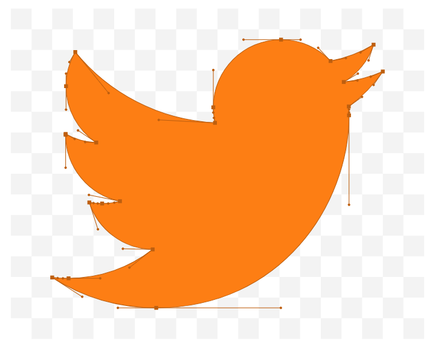
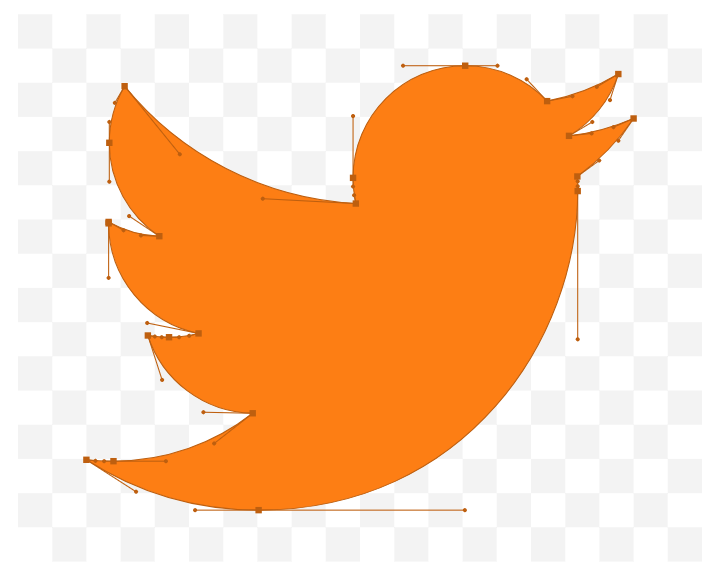

is a Russian politician and former intelligence officer who is serving as the current president of Russia since 2012, previously being in the office from 1999 until 2008.[7][d] He was also prime minister from 1999 to 2000 and again from 2008 to 2012. As of 2021, Putin is the second-longest serving European president, after Alexander Lukashenko of Belarus.

 
